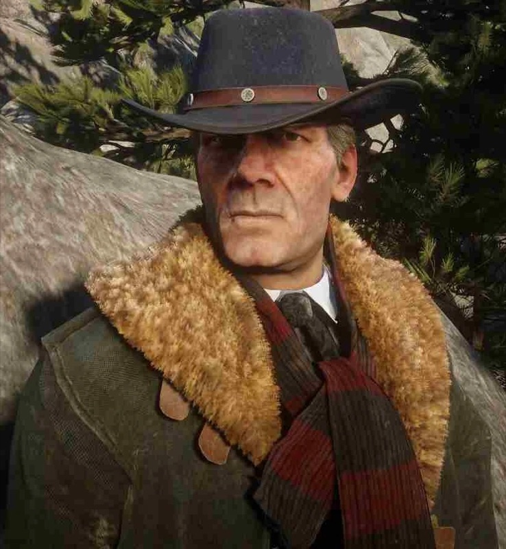
Character · Van der Linde gang
Hosea Matthews
Hosea Matthews is a con man and the co-founder, with Dutch van der Linde, of the Van der Linde gang in Red Dead Redemption 2 (2018). Born around 1844, he is the most senior member of the gang in 1899 and Dutch's second-in-command. He is killed by a Pinkerton agent during the bank robbery in Saint Denis, in chapter 4.
He is played by Curzon Dobell, who provided his voice and performance capture.
- Born
- Around 1844 (aged about 55 in a June 1899 newspaper)
- Died
- 1899, Saint Denis
- Status
- Deceased
- Nationality
- American (grandfather from Lincolnshire, England)
- Affiliation
- Van der Linde gang (co-founder)
- Role
- Con man, planner and Dutch's second-in-command
- Family
- Bessie Matthews (wife, deceased), unnamed father and mother (deceased), unnamed grandfather
- Games
- Red Dead Redemption 2
- Voiced by
- Curzon Dobell
Biography
Origins
Rockstar Games' official presentation of the Van der Linde gang introduces Hosea Matthews as "A master con artist, gentleman and thief" who "has been Dutch's closest friend and right-hand man for over 20 years", and adds that he "can talk his way into, or out of, just about anything". The games never give his year of birth. A newspaper article from June 1899, "Saint Denis Robbers Still on the Run", puts his age at about 55, which places his birth around 1844. Hosea says he grew up in the mountains. On a hunting trip in 1899, he tells Arthur Morgan that he was "virtually weaned on bear meat". A campfire line recorded in the Red Dead Wiki's quote list goes back to that childhood: "We're born with some dreams. We acquire others as we get older and we live out something else. When I was...a kid back east they said there were dragons in the west. Dragons! Well, I guess we found them. Found them or made them or...became them."
Hosea's family history comes from camp conversations, as summarised by the Red Dead Wiki. The family is of English descent: his grandfather grew turnips in Lincolnshire. The wiki calls his father a "three-time bigamist". The man died at 75, after a dissolute life. Hosea spent roughly three months with him in total, by the same account. He still repeats one of his sayings in 1899: "My Pa used to say if you stare into the fire long enough, you can see the whole world pass by." Hosea lost both parents young. At the 1899 party for Jack's return, he says that the story he is about to tell happened when he was "seventeen, eighteen... Long before I met Dutch. I was newly an orphan".
The story is that of his near hanging. In his words: "Anyway, I got caught by some hill country sheriff, stealing a chicken I think it was... And he decided I was going to be hanged for it." According to the Red Dead Wiki's summary, the crowd at the hanging judged the sentence unfair and rioted. A stranger shot through the rope and freed him. The sheriff was the one who ended up hanged, and Hosea walked away with only a sore neck.
Before crime, Hosea had other ambitions. At a campfire, he says he once wanted to be a priest, until he learned that it required being a Catholic. Comedy was another early pursuit, according to the Red Dead Wiki: as a young man he rehearsed a slapstick routine, both on the street and on local stages. The same source says he was drawn to drama as well, struggled to follow a play when he tried to read one, and wanted to perform in one. One camp story, told to Uncle and others, recounts how he slipped onto the stage during a performance of Cyril Tourneur's The Revenger's Tragedy, fluffed his line and was booed off. The Red Dead Wiki adds that he gave up acting after this.
He turned to confidence tricks instead. The Red Dead Wiki says that, as a criminal, he did not stop at deception and theft: he was prepared to take a life if a job called for it. The same page notes that in a campfire story he says he dislikes the killing, and dislikes himself for putting up with it. Another of his stories describes a burglary gone wrong: he walked into a house in the middle of a wake, and got out of trouble by passing himself off as the dead man's oldest friend, a man the family had never met. In 1899 he still cheats at cards. In a rare camp scene he comes back with a case of drinks for everyone. When Karen asks how he won the money, he admits that he cheated at cards. Arthur later remarks on his good mood, and Hosea tells him he won big at cards.
The Collector's Edition of the official guide says Hosea met Dutch van der Linde at a campfire on the road to Chicago. That night, each man set out to rob the other. Once each realised he had been robbed in turn, they laughed and became partners. According to the Red Dead Wiki, Hosea's own version, told in camp, has him posing as the son of the French ambassador, only to find that Dutch had taken his money and his gun in the meantime. The guide says the two then roamed the country running tricks, mostly on people they thought deserved it. The Red Dead Wiki reports that Hosea dates the meeting to "around" 1878, without citing the line. A newspaper clipping kept by Hosea shows them already working together in early 1877.
The clipping, from the New England Examiner of March 9, 1877, lies on the table by Hosea's bed at Shady Belle in 1899. It reports that "Dutch van der Linde and Hosea Matthews" escaped "in broad daylight" the previous day from the jail in Kettering, Ohio. The two men had spent several weeks there posing as international merchants. They had sold twelve residents about 300 dollars of shares in a Portuguese shipping company that did not exist. Sheriff Carmichael was found tied up and naked in their cell. He told the paper only that he was "extremely embarrassed". The same year, Dutch and Hosea took in Arthur Morgan, a young delinquent living on the streets. In "Eastward Bound", Hosea says they found him at about thirteen, "maybe a little older", and adds: "A wilder delinquent you never did see. But he learned fast." The official guide gives Arthur's age as fourteen.
Dutch and Hosea raised the boy. In 1899 Arthur tells Charles Smith that Dutch taught both him and John to read. He then adds: "Taught me a few other things, him and Hosea." On the 1899 fishing trip, Dutch calls the three of them "the old guard" and Hosea describes them in those early years as "The curious couple and their unruly son". Susan Grimshaw arrived in the same period and was for a time Dutch's companion. The gang grew from this core. At some point, Hosea met a woman named Bessie and married her. A photograph of the couple, which the Red Dead Wiki dates to 1883, survives. The two tried for a while to give up crime, at a time when Arthur was still young.
The attempt failed. On the bear hunt of 1899, Hosea tells Arthur: "Didn't last long. I drifted back into it. She understood... she knew what I was." He adds that there is never really any getting out, and that staying in is hard, "but Bessie and I made it work". The couple had spent time together in Grizzlies East, and Hosea had also travelled through Lemoyne with her. Arthur says it was Bessie who taught him dominoes. She died before 1899, and Hosea says she has been gone for many years. Asked by Arthur whether he still misses her, he answers: "Every day." He tells Reverend Swanson that he stayed drunk for a year after her death. In another camp conversation, Abigail asks about his family; he says they are all dead, that Bessie is in heaven, and that he fears he is headed the other way.
In 1885, according to the official guide, Dutch saved a twelve-year-old John Marston from being hanged by homesteaders in Illinois. Hosea and Dutch raised John alongside Arthur. The Red Dead Wiki adds that the two men taught him to write and to shoot, as they had done with Arthur. When John left the gang for about a year after Jack was born, the two men welcomed him back. In 1899, Hosea tells Arthur that he has spoken to John "many times" and asks: "Ain't it about time you let it go now?"
The Red Dead Wiki places the recruitment of Bill Williamson in 1893, when Bill tried to rob Dutch and Hosea after they had already stolen his ammunition. The two men recruited Sean MacGuire the same way: he tried to hold them up in an alley in North Elizabeth with a gun they had quietly unloaded. A newspaper scrap dated April 15, 1887, which the game's item description calls "A news article about Arthur's first bank robbery", reports the robbery of the Lee and Hoyt banking house by three men who left with 5,000 dollars in gold. The article names none of the three. The Red Dead Wiki identifies them as Dutch, Hosea and Arthur.
By 1898 the gang was in Montana. After a good day's fishing there, Hosea meant to cook his catch of large salmon for the camp, but Arthur's dog Copper ate the fish and died soon afterwards. Around December 1898, Micah Bell joined the gang after saving Dutch in a shootout. According to Arthur's journal, Arthur, John and Hosea found the newcomer argumentative, reckless and hotheaded. In the spring of 1899 the gang settled near Blackwater, in West Elizabeth. Hosea and Arthur were preparing a large real estate swindle there. Dutch, pushed by Micah, chose to rob a ferry carrying bank money instead. The April robbery ended in a shootout with Pinkerton agents and local lawmen, and the survivors fled north into the mountains of Ambarino in a blizzard.
Red Dead Redemption 2 (1899)
Chapter 1: Colter
In "Outlaws from the West", Hosea rides at the head of the wagons with Dutch through the snowstorm. "If we don't stop soon, we'll all be dying. This weather, it's May... I'm just hoping the law got as lost as we did", he says, before pointing out Arthur, who has found shelter ahead in Colter, an abandoned mining town. Hosea is the first to open a cabin there, revolver drawn and lantern in hand. Once he sees it is empty, he has Davey Callander carried in. When Dutch returns from the Adler homestead with supplies and the widow Sadie Adler, Hosea helps her down from the horse. Told that O'Driscolls are about, scouting a train, he answers: "That's the last thing we need right now, Dutch." When Micah complains about sharing a bunk room and insults his bunkmates with a racial slur, Hosea cuts him off: "Get yourself to bed."
At Colter, Dutch and Hosea are often seen by the fireplace discussing what comes next. Dutch asks him to pick someone reliable to bury Sadie's husband. In another scene the two argue: Hosea brings up the Pinkertons and bounty hunters, and asks where the gang can go; Dutch admits he does not know yet. In "Enter, Pursued by a Memory", John has been missing for two days and Arthur is reluctant to look for him. Hosea tells him: "At least go take a look." He then asks Javier to go along: "You're the two best fit men we've got." When they bring John back, wounded by wolves, Hosea thanks them both and says that when the weather breaks, the gang will have to keep heading east. Arthur is uneasy about moving toward towns; Hosea answers: "I know...the west is where our problems are worse." In "Old Friends", Dutch leaves him at camp with Charles and Pearson while the others raid the O'Driscolls.
In "Who the Hell is Leviticus Cornwall?", Dutch decides to rob the train the O'Driscolls had planned to hit. Hosea objects: "Why are we doing this? Weather's breaking, we could leave." Asked by Dutch what he wants, he says: "I just don't want any more folks to die, Dutch." He insists that the plan was to lie low and head back west, and warns that "Leviticus Cornwall's no joke", describing him to Arthur as "a big railway magnate, sugar dealer, oil man". He takes no part in the robbery. In "Eastward Bound", he picks the next camp: Horseshoe Overlook, near Valentine. Dutch puts him in Arthur's wagon, saying the two like to talk about "what's gone wrong with old Dutch". When a wheel comes off, Hosea and Charles hold the wagon up while Arthur refits it.
Once the wheel is back on, the three men look up and see three riders watching them from a cliff. Arthur asks: "What you think?" Charles answers first, saying that riders looking for trouble would not have let themselves be seen. Hosea then says: "Poor bastards... we really screwed them over down here." He explains that the Native Americans lost the Heartlands, good farming country, to theft and killings. Arthur warns Charles that Hosea is "a conman, Charles, born and bred"; Hosea calls Arthur "our blockheaded driver". He also tells Arthur that they kept warning Dutch that the ferry job "didn't feel right", and that it "isn't like Dutch to lose his head like that". He gives Arthur yarrow and ginseng he has prepared on the way.
At the new camp, he tells Dutch: "Arthur and I were about to prosper in Blackwater. We were on to something big... then Micah got you all excited about that ferry and here we are." He adds: "I ain't got that long, Dutch. I want folks safe before I go." To the gathered gang he says: "Remember, we are itinerant workers", and describes Valentine as "All mud and morons".
Chapter 2: Horseshoe Overlook
A couple of weeks later, Hosea brings Arthur a hot drink, lists who has already gone looking for money and says that he, for his part, is going to read a book. In camp he keeps the younger men working. In one camp scene, he catches Sean asleep at the poker table, kicks him to the ground and orders him to get to work. In a separate scene, at Horseshoe Overlook, he finds Sean asleep while on watch and threatens to slit his throat. In others, he checks on Sean during his guard duty and asks if he needs anything. He has his own way of getting horses: in "Exit Pursued by a Bruised Ego", he explains that a "big, loud-mouthed bastard" tried to rob him while he was out riding, and that he kept the man's Shire. He wants to get rid of the animal and takes Arthur to the Valentine stable to sell or stable it and buy a new horse.
The real purpose of the trip is a bear he puts at "nearly a thousand pounds", the Legendary Bharati Grizzly Bear, near O'Creagh's Run in Grizzlies East. On the way he asks Arthur to bring no bar fights into town, remembers the Callander brothers and Jenny Kirk, and admits the Cornwall bonds are "still very hot" and hard to sell. The two camp for the night and cook a rabbit. In the morning Hosea explains that he prefers to hunt on the ground rather than from the trees, and has Arthur prepare bait from fish and berries. At the end of the trail, depending on the player's choice, they set the bait or split up. The bear surprises them, and Arthur drives it off with his gun.
Hosea then hands Arthur a Legendary Animal Map, saying he is "a little old and beaten up" to go after the biggest game himself. He says a man in a bar gave it to him, then corrects himself: he stole it. "You saved my life, Arthur", he adds, and asks whether Arthur is coming back to camp or staying to track the bear. If Arthur rides back with him, Hosea tells him at camp that he needs to head out to Emerald Ranch to look into something.
In "The Spines of America", Arthur finds him at Emerald Ranch with Seamus, a fence who suspects they are amateurs. Seamus sets a test: steal a stagecoach from his relative by marriage, Bob Crawford, at Carmody Dell, without killing anyone. By day, Hosea distracts old Crawford and his son with a treatment for the old man's back while Arthur loots the house and reaches the barn. By night, Hosea drives the coach out while Arthur searches the sleeping house. Seamus becomes the gang's fence. During the same period, posters of Dutch and Hosea are up across Blackwater, where Arthur goes to scout before Sean's rescue.
After the shootout in Valentine in "The Sheep and the Goats", the gang has to move again. Just before "A Strange Kindness" begins, Hosea can be heard telling Dutch: "Turned into a bunch of killers, I mean it." Dutch sends Arthur and Charles to look for a new site, and the gang moves to Clemens Point, on Flat Iron Lake, in Lemoyne.
Chapter 3: Clemens Point
In "The New South", Dutch finds Hosea brushing his horse and remarks that he does not look well. "My days of looking good are long over, Dutch", Hosea answers. Dutch calls him "old girl" and asks him to show them the creek he has found; Dutch hopes the warm air will do his "whistling pipes" some good. On the ride, Hosea remembers being in this country with Bessie, "a lifetime ago". When Dutch tells them to keep a low profile but start looking for money, Hosea warns him: "Dutch... we have gotta be discreet." Dutch answers by picturing "a slew of rich simpletons" in the region for Hosea to play. Hosea replies: "Nothing would give me greater pleasure, but...", and Dutch cuts him off. On the road they meet Sheriff Leigh Gray, who is transporting Josiah Trelawny. While Arthur recaptures the escaped Anderson boys, Hosea waits in Rhodes with Trelawny. Dutch then assigns the town's two feuding families: Arthur is to look into the Grays, Hosea into the Braithwaites.
If Arthur accepts, Hosea then leads Dutch and him to his fishing spot on Flat Iron Lake, where he expects drum, sturgeon, bass, bluegill, perch and pickerel. The three reminisce. They recall 1884, when Arthur came back with three fine bass and the camp toasted him all night, until Dutch found out a week later that he had bought them from a fishmonger. In "Advertising, The New American Art", Hosea waits with John at the stash of moonshine the gang kept after the still raid of "American Distillation"; John leaves on another job for Dutch and Arthur takes his place. Hosea's plan is to bring the liquor back to Catherine Braithwaite as lost goods and claim half its value as a reward. Catherine already knows the sheriff had it seized. She pays them an extra ten dollars to give it away for free in the Rhodes saloon, which belongs to the Grays.
On the way, Hosea gives them their roles: he will be "Melvin", the clown, and Arthur his slow-witted brother "Fenton". They pour free moonshine into the night until a group of Lemoyne Raiders recognise their liquor and open fire. According to the Red Dead Wiki, one Raider throws Hosea off the balcony; he shoots the man from the floor. The two fight their way out and escape by wagon. Hosea then heads back to Braithwaite Manor. Dutch and Micah lay out the full plan to Arthur: play the feud to get at the families' money. Dutch will work the Grays, Hosea the Braithwaites. In "The Fine Joys of Tobacco", Arthur finds Hosea and Sean playing cribbage with Catherine. When she asks whether Arthur is "as dumb as he looks", Hosea answers with a joke of his own. Catherine hires Arthur and Sean to burn the Grays' tobacco fields at Caliga Hall while Hosea keeps negotiating with her.
In "Blessed are the Peacemakers", Pearson reports that some O'Driscolls want a parley between Dutch and Colm O'Driscoll. Hosea says at once: "It's a trap." Micah argues that there is nothing to lose by finding out, and Dutch goes; the O'Driscolls capture Arthur during the meeting. Hosea's cough is heard often in camp. Dutch notes his poor colour, and if Arthur talks to him while he is making medicine during this chapter, Hosea confirms that he has a lung disease; the game never names it. After Sean is killed in Rhodes, Jack disappears from camp. In "Blood Feuds, Ancient and Modern", Hosea rides to Braithwaite Manor with Dutch, Arthur, John, Charles, Bill, Javier and Lenny. Once the grounds are cleared, he enters the house with Dutch, and the gang sets it on fire after a search finds no trace of Jack. The Red Dead Wiki also credits Hosea with burning one of the Braithwaite men alive.
Catherine reveals that her sons handed Jack to Angelo Bronte, in Saint Denis. "Blood Feuds, Ancient and Modern" leads straight into "The Battle of Shady Belle". Back at Clemens Point, Hosea and Dutch sit at a table with John and Arthur and try to reassure John: "It's gonna work out, John... It's gonna work out listen to Dutch." Pinkerton agents Andrew Milton and Edgar Ross interrupt the conversation by walking into camp. Milton greets Hosea by name. He offers a deal: if Dutch comes with him, the rest of the gang gets three days to run off and disappear. The gang draws its guns and the agents leave. Dutch sends John and Arthur to check Shady Belle, an old plantation house in the bayou near Saint Denis. On the ride, John blames the trouble on "Dutch playing his games, Hosea too", and calls the two "The master conmen". The gang then moves to Shady Belle.
Chapter 4: Saint Denis
At Shady Belle, Hosea has a room of his own, where he keeps the Kettering clipping. Jack comes back from Bronte's mansion at the end of "Angelo Bronte, A Man of Honor", and the gang throws a party. During the evening Hosea tells the story of his near hanging, and John tells him he could not have got Jack back without Dutch and Arthur. In the days that follow, Hosea teases Jack about having run off to join the circus, calls him their little prince when the boy praises life at Bronte's, and announces that their reading lessons resume the next day. In "The Gilded Cage", Dutch insists the gang buy proper clothes for Mayor Henri Lemieux's garden party, where Bronte is the guest of honour. Hosea goes with Dutch, Arthur and Bill, in a coach driven by Lenny.
While Dutch and Arthur talk with Bronte on a balcony, Hosea and Bill mingle with the guests, and Dutch asks Hosea to look for a target. Bill finds the evening torture; Hosea comes away with two leads, a high-stakes poker game on a riverboat and the Lemoyne National Bank. While Dutch and Arthur are still planning the trolley station robbery Bronte suggested, the O'Driscolls attack Shady Belle in "Horsemen, Apocalypses", and Hosea is among those who defend the house. In "Urban Pleasures", Bronte's tip proves to be a set-up. In "Country Pursuits", Arthur finds Dutch and Hosea arguing. Dutch wants Bronte dead before the bank job, since Bronte controls the city; Hosea calls it foolhardy and a matter of revenge. Dutch asks Arthur to settle the matter, and Arthur sides with Dutch. Hosea warns Dutch: "You'll damn us all..."
Hosea then prepares the bank robbery. In camp he tells Pearson that he and Abigail did well in town: Abigail passed herself off as part of a real estate business from New England, and she hid an explosive device to be set off on the day of the robbery. He asks Pearson whether he is ready for Tahiti, and tells him to pack, because they are leaving. At the planning table, he walks Dutch through the diversion; when Dutch shows a moment of doubt, Hosea tells him to show a little faith. On the morning of "Banking, The Old American Art", Dutch hesitates again. Hosea tells him that his planning has been thorough, and Dutch agrees to go ahead. Hosea and Abigail ride ahead to set off the diversion, while the others walk into the Lemoyne National Bank through the front doors.
The explosion goes off as planned. While the gang is inside, Pinkertons surround the building. Agent Milton has caught Hosea during the diversion; Abigail has got away. Milton holds Hosea in the street in front of the bank and orders Dutch to come out. Dutch calls back: "Mr. Milton, let my friend go. Or folk, they are gonna get shot unnecessarily!" Milton answers that the gang has had its chances. He pushes Hosea forward and, when Hosea turns back toward him, shoots him in the chest. He tells Dutch that this is their deal. Hosea dies on the spot. Dutch and Arthur open fire, and the gang escapes over the rooftops. John is arrested and Lenny is shot dead during the escape.
Legacy
The June 1899 article cited above, "Saint Denis Robbers Still on the Run", published a few weeks after the robbery, reports that Lenny and Hosea were reportedly killed, but that their bodies were never found during the cleanup. It adds that Hosea was a wanted man in at least six states. Dutch, Arthur, Micah, Bill and Javier end up shipwrecked on Guarma. There, in "A Kind and Benevolent Despot", Dutch wonders aloud why Hosea and Lenny were killed at the bank while John was only arrested and Abigail got away. In the Guarma camp, according to the Red Dead Wiki, Micah tells Arthur that Hosea was dying anyway.
While the core of the gang is away, those left behind move to Lakay, in the bayou. In "Fleeting Joy", Dutch reaches Lakay after Micah and Javier, and Abigail tells him that they took Hosea's and Lenny's bodies from the morgue and buried them. According to the Red Dead Wiki, the two graves lie side by side in Bluewater Marsh. They can be visited from "Fleeting Joy" onward, and Hosea's grave counts toward the Paying Respects trophy. The wiki also notes that both men say, in camp, that they would like to be buried among friends. In "The King's Son", after Arthur tells Charles that he is dying, Charles answers that he is lucky in a way: unlike Hosea, Lenny, Sean or the Callander brothers, he has time to make amends.
Arthur later writes in his journal that he misses Hosea's wisdom, and he takes over Hosea's role of pressing Dutch to think of the women and Jack. In chapter 6, riding with Sadie to rescue Abigail from Milton, Arthur reels off a list of names when he tells her they have to put an end to it. In the low-honor version, Hosea is the first name on that list. In the high-honor version, the list begins "John, Hosea, Mac...". Abigail then kills Milton at Van Horn. The years after 1899 keep Hosea's name in print. A later newspaper article read in the game, "Notorious Bad Man Alive", reports a sighting of Dutch after seven years on the run. It states that Hosea and Arthur were killed by the Pinkertons in 1899, and that Bill, Micah, John and Charles are still at large.
Hosea's words also come back to Arthur in his last days. In "A Fork in the Road", the mission page lists two of his lines among those Arthur remembers. With high honor, it is the warning about the storm he gave Dutch on the way to Colter, although Arthur was not with them when he said it. With low honor, it is his remark to Dutch about the gang turning into killers, heard just before "A Strange Kindness". During the final ride of "Red Dead Redemption", the mission's transcript lists his plea to Dutch in "Who the Hell is Leviticus Cornwall?" (high honor) and his father's saying about staring into the fire (low honor). The Red Dead Wiki's character page gives two more low-honor lines for that ride: the warning to Dutch in "Country Pursuits", and "Thought we was above the law, above morality.", which comes from a campfire conversation.
Personality
Rockstar's character description reads: "A master con artist, gentleman and thief, Hosea has been Dutch's closest friend and right-hand man for over 20 years. Intelligent and quick-witted, he can talk his way into, or out of, just about anything." The game's complete official guide calls him "intelligent and levelheaded" and says he "regularly advises Dutch and is valued for his wisdom". In the game he prefers schemes to gunfights. The Red Dead Wiki notes that he rarely raises his voice; his outbursts at camp are aimed at idle or drunk gang members, Bill and Sean.
He is the voice of caution against Dutch's plans. Before the Cornwall train he asks why they are robbing it when the plan was to lie low, and says: "I just don't want any more folks to die, Dutch." Just before "A Strange Kindness", he tells Dutch the gang has "turned into a bunch of killers". He is also ill. He coughs and wheezes around camp, and in "Eastward Bound" he tells Dutch: "I ain't got that long, Dutch. I want folks safe before I go." On the fishing trip of "The New South", Dutch hopes the air will do his "whistling pipes" some good. Other gang members wonder aloud whether his lungs are diseased. If Arthur talks to him while he prepares medicine in chapter 3, Hosea confirms that he is ill. The game never names the illness.
Hosea reads. He follows a series of detective novels starring Aldous Filson: the 18th volume, "The Case of the Deceitful German", lies among his things at the start of chapter 2, and if Arthur picks it up and reads it, Hosea asks him for another title in the series, "The Case of the Shrew in the Fog", kept in the house at Hagen Orchards, north of Saint Denis. No other camp request works this way: in every other case, the gang member who wants the item asks Arthur for it in person. He is often seen with a newspaper. As a young man he wanted to become a priest, he says at the campfire, without knowing that one had to be a Catholic. He tells Abigail that Bessie is in heaven but that he fears he is headed "down south".
Names and nicknames
In Rhodes, in "Advertising, The New American Art", Hosea poses as "Melvin", with Arthur as his brother "Fenton". The Red Dead Wiki also gives "Alfred Lafonde" as an alias he uses in Saint Denis. Dutch calls him "Old Hosea" and "old girl"; with Arthur, he is one of "the old guard". Arthur calls him "old man" after the bear attack in "Exit Pursued by a Bruised Ego", and Micah, speaking to Arthur in "Blessed are the Peacemakers", calls him "the old man". Jack calls him "Uncle Hosea". Bill, drunk, calls him an "old fool". His first name is that of Hosea, an Israelite prophet of the 8th century BC whose book is part of the Hebrew Bible; the name is usually rendered as "salvation" or "he saves".
Appearance
In 1899 Hosea is thin and in his fifties. His hair is grey, kept short, and he has no beard or moustache. His usual outfit is a shirt and vest, a black hat, and dark trousers worn inside brown leather boots with tooled decoration; in the cold of Colter he wears a buttoned dark green coat and a striped scarf. For the mayor's party and the Saint Denis bank job he puts on a black jacket, a dark blue waistcoat and a black bow tie. An old photograph of Hosea with Dutch and Arthur shows him with light-coloured hair.
Relationships

Dutch van der Linde
Dutch and Hosea met in the late 1870s, on the road to Chicago, each trying to rob the other, and founded the gang together. By 1899 Hosea has been his right-hand man for more than twenty years. He opposes several of Dutch's choices: the Cornwall train, the parley with Colm, the plan to kill Bronte. At Horseshoe Overlook he reminds Dutch that he and Arthur "were about to prosper in Blackwater" before Micah sold him the ferry job; in a camp scene Dutch admits his mistakes there and Hosea forgives him. On the morning of the Saint Denis bank job he reassures a hesitant Dutch. Dutch is in the street outside the bank when Hosea is killed. On Guarma, Dutch wonders aloud why Hosea and Lenny were killed while John was only arrested.

Arthur Morgan
Dutch and Hosea took Arthur in around 1877. Hosea later says he was about thirteen, "maybe a little older", and that "a wilder delinquent you never did see". Dutch taught him to read; Hosea, as Arthur puts it in "The Aftermath of Genesis", taught him "a few other things". Hosea sums up the three of them as "the curious couple and their unruly son". In 1899 they hunt the legendary bear together; Arthur saves him, and Hosea tells him "You saved my life". Hosea often asks Arthur to back him against Dutch, but Arthur sides with Dutch over Bronte. Hosea also urges him to forgive John. The Red Dead Wiki reports that Arthur writes in his journal that he loves Dutch but, in many ways, loves Hosea even more; after Hosea's death he tells Charles he misses his wisdom.

John Marston
Arthur tells Hosea that he and Dutch "pretty much raised" John, taken in by Dutch in 1885. Hosea welcomed John back after his year away, and tells Arthur that John knows he did wrong and that it is time to let it go. At Colter he is the one who insists that Arthur ride out to look for him. At Horseshoe Overlook he checks on John's recovery, and in another camp scene tells him that Jack is his business and that he, Abigail and Jack should run away; John answers that they both know it will not happen. In "The Battle of Shady Belle", after Jack's kidnapping, Hosea tells him: "It's gonna work out, John." Later in the mission John blames "Dutch playing his games, Hosea too".
Bessie Matthews
Bessie was Hosea's wife; the French Red Dead Wiki calls her his companion. A photograph of the couple kept in camp is dated 1883. With her, Hosea briefly tried to leave the outlaw life while Arthur was still young, then drifted back; he tells Arthur that she "knew what I was" and that he misses her "every day". They spent time together in the Grizzlies East and in Lemoyne. She died before 1899. Hosea tells Swanson he was drunk for a year after her death. According to the Red Dead Wiki, Arthur says Bessie taught him dominoes, and Jamie Gillis asks Arthur about her in "We Loved Once and True III".

Abigail Marston
In a camp scene, Abigail tells Hosea that he has been like a father to her. At Colter, when she begs Arthur to look for John, Hosea backs her. When she confides that she fears the Pinkertons and bounty hunters, he advises her to take Jack and "make plans". Before the Saint Denis bank job the two scout the Lemoyne National Bank together; she poses as a real estate investor from New England and hides the explosive for the diversion. Hosea tells Pearson that she is the best actress he has ever seen. During the robbery Milton captures Hosea, while Abigail gets away.
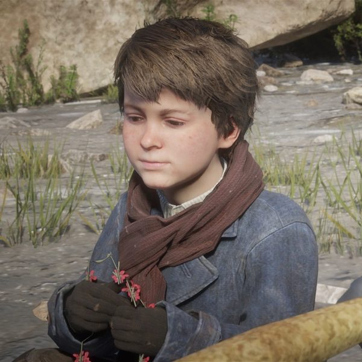
Jack Marston
Jack calls him "Uncle Hosea", and, as Jack tells Arthur in "A Fisher of Men", Hosea made his fishing rod. Hosea gives him reading lessons at camp; Jack says it is too hard and that he does not care about reading. When Jack comes back from Angelo Bronte's house, Hosea teases him about joining the circus, says his disappearance scared Abigail half to death, calls him the gang's little prince and tells him they will start reading again the next day. After Arthur takes Jack fishing in "A Fisher of Men", Jack tells Hosea that Arthur was a good teacher; in "The New South", Hosea passes this on to Arthur and jokes that the boy must have him confused with someone else. When Hosea asks Arthur whether the gang is a place to raise Jack, Arthur answers that it beats how he grew up.

Sadie Adler
Hosea helps Sadie down from Dutch's horse when she reaches the Colter camp, and, when Arthur tells him her husband's body is in a wagon outside, promises to send someone to bury it. At Horseshoe Overlook he is one of those who console her over Jake's death, and she can be seen listening to his stories at the campfire. Sadie takes no part in the Saint Denis bank job in which he is killed. While Dutch's group is on Guarma, she and the other survivors take Hosea's and Lenny's bodies from the city morgue.

Micah Bell
Hosea and Arthur dislike Micah from the start, and Hosea holds him responsible for the Blackwater ferry job, which he and Arthur thought wrong. In a camp argument he tells Micah that the people they lost mattered to him; Micah calls the losses part of the game. When Micah and Lenny are late back from scouting, Hosea grants that Micah is "effective, in his own way". In "Blessed are the Peacemakers" Hosea calls the parley a trap; Micah talks Dutch into going. On Guarma Micah says that Hosea "was dying anyway". After Hosea's death Micah takes his place as Dutch's right-hand man.

Charles Smith
In "Eastward Bound", Charles helps Hosea and Arthur put a wagon wheel back on. Hosea then points out Native Americans watching from a cliff and explains that the Heartlands were taken from their people. When Charles says he struck out alone at about thirteen, Hosea replies that this was about the age they found Arthur. Charles asks him whether he knows the area; Hosea says he has been through a couple of times and suggests Valentine. While Dutch's group is on Guarma, Charles is among those who recover the two bodies from the morgue.

Susan Grimshaw
According to the Red Dead Wiki, which cites her character biography in the official guide, Susan was one of the gang's first members with Dutch, Hosea and Arthur. At Horseshoe Overlook she tells Dutch and Hosea that their tents will be ready shortly, and later passes on to Arthur that Hosea wants to meet him at Emerald Ranch. She is the one who sent Micah and Lenny scouting; on the bear hunt Arthur wonders aloud to Hosea why she chose Micah.

Lenny Summers
Hosea thinks well of Lenny: on the bear hunt he says Lenny has "a good head on his shoulders", and the Red Dead Wiki notes that Hosea and Arthur see him as one of the gang's best men. He also jokes with Arthur that Lenny and Jenny Kirk "could never have worked". When Hosea coughs at the campfire, Lenny or Swanson pats him on the back. Lenny drives the coach that takes Hosea, Dutch, Arthur and Bill to the mayor's party. According to the wiki, both men say at camp that they want to be buried with friends. Both are killed during the Saint Denis bank job, and they are buried side by side in Bluewater Marsh; the graves can be visited after "Fleeting Joy".

Bill Williamson
According to the Red Dead Wiki, Bill met Dutch and Hosea in 1893 when he tried to rob them, after they had already stolen his ammunition. At camp Hosea orders him to work; when Bill asks why Hosea does not work himself, Hosea says he does, and that is why he is in the state he is in. One night a drunk Bill insults him at the dominoes table; Hosea draws a revolver and orders him to sleep it off: "I've excused you quite enough!" Bill also asks what he is reading, and is told it is nothing he would be interested in. Bill goes with Hosea to the mayor's party, which he calls "torture", and escapes the bank job in which Hosea dies.

Javier Escuella
At Colter Hosea asks Javier to ride out with Arthur to look for John, calling them "the two best fit men we've got"; when they return with John he thanks them both. In "Eastward Bound", Javier offers to help with the broken wagon wheel; Hosea declines: "I reckon we can handle it." Javier rides with Hosea to Braithwaite Manor, and escapes the Saint Denis bank job in which Hosea is killed.

Sean MacGuire
According to the Red Dead Wiki, Dutch and Hosea met Sean in a bar in North Elizabeth, where he tried to rob them, and took him into the gang. Hosea is hard on him: he kicks him off the poker table to send him to work and, finding him asleep on watch, threatens to slit his throat. On other nights he praises him on guard duty and asks if he needs anything. After Sean's rescue Hosea remarks how much he has enjoyed his hero's return. At the card-winnings party he first refuses Sean a bottle, then gives him one. In "The Fine Joys of Tobacco" Sean plays cribbage with Hosea and Catherine Braithwaite, then burns the Grays' fields with Arthur. He is killed in Rhodes soon after.

Uncle
Uncle is a regular audience for Hosea's stories at the campfire. Hosea tells him and others how he was almost hanged as a young man, and how he once snuck onto a stage and botched his part; when Hosea mentions playing in theatres and on the streets along the big rivers, Uncle answers that he was always into running women. After the wake story, Arthur calls the two of them a couple of crazy old men. When Uncle starts on his trip to Timbuktu, Hosea says he does not believe it, however many times he has heard it, and goes to bed.

Leopold Strauss
At Colter Hosea discusses the gang's route with Strauss, and tells Arthur they will have to keep heading east once the weather breaks; he then leaves with him: "Come on, Herr Strauss. Let's get warm." During the raid on the O'Driscoll hideout at Ewing Basin, both stay at camp with the women, the wounded John and the older men. On the fishing trip of "The New South" Hosea jokes that the Cornwall ambush in Valentine scared the living daylights out of Mr. Strauss. At Shady Belle Strauss lectures him by the fountain on what real coffee is; Hosea replies that he looks forward to it.

Josiah Trelawny
In "The New South", Hosea, Dutch and Arthur find Trelawny in a prison wagon driven by Sheriff Leigh Gray; he is freed after Arthur recaptures the escaped Anderson boys. Trelawny warns of large bounties on the gang, and Hosea asks him where he heard it. On the ride Hosea says that Trelawny owes everyone for something but that his information is good, doubts his skills as a magician but grants that he is good at disappearing, and has Dutch retell the time he found Trelawny in an outhouse. On the ride out to the bear hunt in "Exit, Pursued by a Bruised Ego", Arthur reminds Hosea that John "ain't Trelawny".

Simon Pearson
According to the Red Dead Wiki, Pearson and Hosea get on well and often joke together. In "Old Friends", Dutch leaves Hosea, Charles and Pearson to watch the Colter camp. Pearson brings back the O'Driscolls' offer of a parley, which Hosea calls a trap. At Shady Belle Hosea asks him if he is ready for Tahiti; Pearson says he has never been there but has seen Bali and Java. Hosea tells him that the scouting in town with Abigail went well, and to start packing. Pearson is among those offered a drink when Hosea comes back from his card winnings, and he is one of Arthur's dominoes partners at Shady Belle, like Hosea.

Orville Swanson
In a conversation at the campfire, Swanson tells Hosea about his marriage and the bigamy he committed without knowing it. In another, by the stew pot, Swanson says he dislikes Catholics but respects confession, and wishes to confess to Hosea; Hosea answers that this is between him and God, and agrees when Swanson says God would have struck him down long ago if he cared. During the O'Driscoll attack on Shady Belle, Swanson takes cover inside the house.

Karen Jones
When Hosea comes back to camp with a case of drinks after a big win at cards, Karen asks how he did it; he answers that he cheated, like a proper gentleman. He then toasts his friends and asks her to sing, and she performs "Dance by the Light of the Moon". According to the Red Dead Wiki, in another camp scene Karen tells Mary-Beth she trusts Dutch and Hosea to protect the gang from the law.

Tilly Jackson
Tilly survives the gang's collapse. In a letter to John and Abigail written in the epilogue, in which she introduces herself as Tilly Pierre, she says she has had a daughter and still sees Mary-Beth, and writes that Hosea had been "like a father" to her. In the same letter she says she has had no news of Karen and believes drink killed her.

Mary-Beth Gaskill
Mary-Beth and Hosea are both among Arthur's dominoes partners in chapters 2 and 4. She is with Hosea, Dutch and the others around the campfire at the party for Jack's return, while Javier sings "Cielito Lindo".

Molly O'Shea
At Beaver Hollow, after the gang's return from Guarma, a drunk Molly claims in front of everyone that she told the Pinkertons about the Saint Denis bank job, the robbery in which Hosea was killed, so that they would kill Dutch. Susan Grimshaw shoots her dead. Her claim is false: Agent Milton later tells Arthur that Micah is the gang's informant.

Kieran Duffy
When the gang rides to Braithwaite Manor to get Jack back, Kieran stays behind with Micah to guard the camp. Afterwards he tells Abigail that he had seen the Braithwaites come to camp and knew Arthur and Hosea had dealings with them, but did not imagine they would take Jack; he apologises and says he would give his life for the boy. In "Horsemen, Apocalypses" his mutilated body is brought into Shady Belle on his horse and the O'Driscolls attack; Hosea is among the defenders of the house.

Catherine Braithwaite
In "The New South", Dutch gives Hosea the Braithwaites to work on. In "Advertising, The New American Art", Hosea and Arthur bring Catherine her own stolen moonshine, Hosea presenting it as lost goods and asking for a reward. When her sons turn hostile, she orders them to stand down and pay the two men. She then offers 10 dollars more if they hand the liquor out for free in a Gray saloon in Rhodes, where the Lemoyne Raiders attack them. In "The Fine Joys of Tobacco", Arthur finds her playing cribbage with Hosea and Sean; she asks whether he is "as dumb as he looks", Hosea answers with a joke, and she hires Sean and Arthur to burn the Grays' tobacco fields while Hosea keeps negotiating. When she learns the gang stole her horses, her men take Jack; the gang then storms Braithwaite Manor.
Bartholomew Braithwaite
One of Catherine's sons (Bartholomew, according to the Red Dead Wiki) greets Hosea and Arthur with hostility at Braithwaite Manor. When Hosea suggests selling the moonshine elsewhere, he points his shotgun at them: "The alternative is you get shot." His mother orders her sons to stand down and pay the two men. At the cribbage meeting of "The Fine Joys of Tobacco" he barely speaks, except to insult Hosea as a "Yankee numbskull".
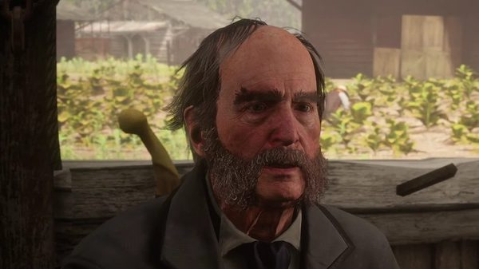
Tavish Gray
Hosea and Tavish never share a scene. When Dutch decides to exploit the feud, he gives the Grays to Arthur and the Braithwaites to Hosea. It is through Hosea's dealings with Catherine Braithwaite that Arthur and Sean set fire to Tavish's tobacco fields at Caliga Hall. The Grays later offer the gang a job in Rhodes, which turns into the ambush in which Sean is killed.
Leigh Gray
In "The New South", Hosea, Dutch and Arthur come across Leigh Gray, the sheriff of Rhodes, and his deputy Archibald MacGregor taking prisoners to town, Trelawny among them. Dutch introduces himself as "Hoagy Macintosh" and gets Trelawny released once Arthur has recaptured the escapees; the sheriff welcomes the newcomers to Rhodes. Leigh is killed by Arthur outside his office during the Grays' ambush in "A Short Walk in a Pretty Town".

Angelo Bronte
Bronte invites Dutch to a party at the Saint Denis mayor's house; Dutch brings Hosea, Arthur and Bill, and Hosea comes away with two leads, a riverboat poker game and the Lemoyne National Bank. After Bronte sets the gang up with a false lead, Dutch wants him dead; Hosea calls it foolhardy revenge and warns him: "You'll damn us all"; but Arthur sides with Dutch. When Jack comes back from Bronte's house praising the life there, Hosea compares it to a cage. The gang later abducts Bronte, and Dutch drowns him.

Andrew Milton
During the Saint Denis bank job, Agent Milton captures Hosea at the diversion he set up with Abigail and holds him in the street outside the bank. He tells Dutch the gang has had its chances. When Dutch asks him to let his friend go, Milton pushes Hosea forward and shoots him in the chest, calling it their deal. According to the Red Dead Wiki, he uses a Cattleman Revolver rather than his usual Schofield. Abigail later kills Milton, after Arthur and Sadie come to her rescue.

Edgar Ross
According to the Red Dead Wiki, Edgar Ross stands at Milton's side outside the Lemoyne National Bank when Milton executes Hosea. The two men never speak in the game. Ross is also with Milton when Milton confronts Arthur by the river in "A Fisher of Men". In 1911, Ross, now an agent of the Bureau of Investigation, forces John Marston to hunt down Bill, Javier and Dutch.

Leviticus Cornwall
Hosea opposes the robbery of Cornwall's private train in "Who the Hell is Leviticus Cornwall?": Cornwall, he warns Dutch, is "no joke", "a big railway magnate, sugar dealer, oil man". He takes no part in the robbery. The take is in bonds, which Hosea later tries to sell. In "The Sheep and the Goats", Cornwall's men take John and Strauss hostage outside Keane's Saloon in Valentine and demand Dutch; Arthur draws and frees them, and Strauss is shot. After the shootout the gang moves east to Clemens Point, a move Hosea argues against.
Seamus
Seamus is a fence at Emerald Ranch with whom Hosea seeks to do business. In "The Spines of America", Hosea introduces Arthur to him as a possible partner; to prove they are not amateurs, Seamus asks them to steal a stagecoach, itself stolen, that Bob Crawford, his cousin by marriage, has bought; Crawford lives at Carmody Dell. By day Hosea distracts Crawford and his son while Arthur takes the coach; by night Hosea takes the coach himself.
Davey and Mac Callander
The Callander brothers were lost after Blackwater. At Colter, Hosea checks an empty cabin and has Davey brought into it; Davey is dead on arrival. Mac never rejoins the gang: Agent Milton later tells Arthur that he found Mac badly wounded and killed him. On the ride to Valentine Hosea recalls a long day in Deer Creek when Mac "went crazy, threatened to kill the whole town" and Davey was so drunk they left him there overnight. Arthur says their luck seems to have died with them and with Jenny Kirk, who, Hosea says, "had some spark"; Hosea answers that they will be all right once they have money.
Skills, weapons and horses
Con artistry
Before the Blackwater ferry job, Hosea and Arthur were preparing a large real estate swindle of their own. In "Advertising, The New American Art" he and Arthur hand out moonshine in a Rhodes saloon, performing a clown-and-idiot double act; the wiki notes that Arthur ends up as the "idiot" in several of their cons. In a rare camp scene, Hosea tells two passing strangers that Arthur "was dropped on his head as a child", then sends them away with a veiled threat. At the campfire he tells how, breaking into a house, he walked into a wake and got out of it by posing as the dead man's best friend. When Arthur plays dominoes with him, Hosea passes on tips about shopkeepers' illegal side businesses, such as the Valentine doctor's protection racket in chapter 2. He is also the one who looks for a buyer for the Cornwall bonds, which he calls "still very hot".
Hunting, fishing and remedies
Hosea says he grew up in the mountains and was "virtually weaned on bear meat". In "Exit Pursued by a Bruised Ego" he leads the hunt for a bear of nearly a thousand pounds near O'Creagh's Run. He advises a bow or a .22 varmint rifle for rabbits, so as not to ruin the meat, has Arthur mix a bait of fish and berries, and says he prefers to hunt on the ground rather than from the trees. After the bear attack he gives Arthur a map of the legendary animals, which he says he stole from a man in a bar. He knows which fish live in Flat Iron Lake. On the road to Horseshoe Overlook he gives Arthur yarrow and ginseng he has prepared. In chapter 3 he asks Arthur, as a camp request, for two ginseng plants. Each request Arthur fulfils counts toward the Errand Boy trophy; Hosea's reward is potent predator bait, left at Arthur's wagon, which keeps reappearing there even after his death.
Weapons
His weapons are two custom Cattleman Revolvers with steel frames and bone grips bearing a Buck Cattleman logo. He wears them grips forward in their holsters; according to the Red Dead Wiki, he and Micah are the only gang members who carry their revolvers this way, for a cavalry draw. He also owns a double-barreled shotgun, a custom Semi-Auto Shotgun in blued steel with a browned frame, and a Rolling Block Rifle; seeing the rifle, Arthur asks whether he is hunting an elephant. The wiki notes that the rifle can be obtained early by throwing dynamite near Silver Dollar after the bear hunt. He also carries a unique hunting knife.
Horses
Hosea rides Silver Dollar, a Turkoman with a grey coat, once black, with the metallic sheen of the breed, a black mane and tail. He rides him in "Exit Pursued by a Bruised Ego", "The Spines of America", "The New South" and "Blood Feuds, Ancient and Modern". According to the Red Dead Wiki, Hosea asks Arthur to make sure Silver Dollar gets his share of hay. The horse is at the Shady Belle camp but is never ridden there, and disappears after Hosea's death; a similar horse can be bought at the Tumbleweed stable in 1907. Hosea also kept a Raven Black Shire, which he calls an "unruly bastard" and "an angel... if I'm near him". He took it from a man who tried to rob him ("well, you know how it is", he tells Arthur) and gives it to Arthur in "Exit Pursued by a Bruised Ego", to sell or stable in Valentine.
Missions
The English Red Dead Wiki lists 21 story missions of Red Dead Redemption 2 for Hosea: 19 in which he appears, from the opening of chapter 1 to the Saint Denis bank robbery at the end of chapter 4, and two in chapter 6 in which only his voice is heard, as a memory. The French edition lists 18: it leaves out "The Spines of America" and the two voice-only appearances. The table follows the English list in story order. Hosea is never playable. He is the sole mission giver of three missions, "Exit Pursued by a Bruised Ego", "The Spines of America" and "The Fine Joys of Tobacco", and shares two: "The Gilded Cage" with Dutch and "Advertising, The New American Art" with Abigail.
| Mission | Chapter | Hosea's role |
|---|---|---|
| Outlaws from the West | 1. Colter | Rides at the head of the wagons with Dutch through the snowstorm and spots Arthur coming back from scouting. At Colter he checks an empty cabin, lantern and revolver in hand, and Davey Callander is carried inside, already dead. When Dutch returns from Adler Ranch, he helps Sadie Adler down from Dutch's horse and sends Micah to bed. |
| Enter, Pursued by a Memory | 1. Colter | When Abigail begs Arthur to look for John, he tells Arthur to at least go and look, and asks Javier to ride with him. He thanks both men on their return and, with Strauss, explains that the gang will keep heading east once the weather breaks. |
| Old Friends | 1. Colter | Stays at Colter with Pearson and Charles while the others raid the O'Driscoll camp. He only appears in the opening and closing scenes, although the map shows an ally marker for him at the hideout. |
| Who the Hell is Leviticus Cornwall? | 1. Colter | Objects to robbing the train: the weather is breaking, the plan was to lie low and go back west, and Leviticus Cornwall is a railway, sugar and oil magnate. Dutch goes ahead anyway and Hosea takes no part in the robbery. |
| Eastward Bound | 1. Colter | Proposes Horseshoe Overlook, near Valentine, as the new camp and rides there in Arthur's wagon. He helps Charles hold the wagon up while Arthur refits a wheel, tells them how the Wapiti lost the Heartlands, and gives Arthur yarrow and ginseng. On arrival he tells the gang to pose as itinerant workers and to start in Valentine. |
| Exit Pursued by a Bruised Ego | 2. Horseshoe Overlook | Mission giver. Takes Arthur after a bear of about a thousand pounds near O'Creagh's Run, after a stop in Valentine to sell or stable a Shire. The bear charges; Arthur drives it off. Hosea then gives Arthur a map of legendary animals and returns to camp, with or without him. |
| The Spines of America | 2. Horseshoe Overlook | Mission giver. Has to prove himself to Seamus, the fence at Emerald Ranch, by stealing a stagecoach, itself stolen, that Bob Crawford has bought and keeps at Carmody Dell. By day he distracts the Crawfords with a fake spinal treatment while Arthur loots the house; by night he drives the coach away. Seamus pays 300 dollars. |
| A Strange Kindness | 2. Horseshoe Overlook | Can be heard arguing with Dutch about the gang's violence just before the mission begins; he has no part in the mission itself, given by Dutch. |
| The New South | 3. Clemens Point | Leads Dutch and Arthur from Clemens Point toward a fishing spot. When Trelawny is freed in Rhodes, Dutch tells Hosea to find out about the Braithwaites. If Arthur agrees, the three fish together on Flat Iron Lake. |
| Advertising, The New American Art | 3. Clemens Point | Mission giver with Abigail. Sells the stolen moonshine back to Catherine Braithwaite as lost goods, then agrees to hand it out free in the Grays' saloon for 10 dollars more. In Rhodes he and Arthur play two brothers, Melvin and Fenton. Lemoyne Raiders break up the evening; the two shoot their way out and escape by wagon. |
| The Fine Joys of Tobacco | 3. Clemens Point | Mission giver. Plays cribbage with Catherine Braithwaite at her manor and vouches for Arthur, then stays to negotiate while Arthur and Sean burn the Grays' tobacco fields. |
| Blessed are the Peacemakers | 3. Clemens Point | Calls Colm O'Driscoll's offer of a parley a trap. Micah, who gives the mission, persuades Dutch to go. |
| Blood Feuds, Ancient and Modern | 3. Clemens Point | Joins the assault on Braithwaite Manor to get Jack back. He enters the house with Dutch, takes part in setting it on fire and questions Catherine, who says Jack is with Angelo Bronte in Saint Denis or on a boat to Italy. |
| The Battle of Shady Belle | 3. Clemens Point | Tries with Dutch to reassure John about Jack, and is at Clemens Point when Agent Milton and Edgar Ross arrive to offer the gang amnesty in exchange for Dutch. |
| Angelo Bronte, A Man of Honor | 4. Saint Denis | Present at the party at Shady Belle for Jack's return. Beside the fountain he jokes with Jack about the boy's stay at Bronte's mansion. |
| The Gilded Cage | 4. Saint Denis | Mission giver with Dutch. Tells Arthur they need proper clothes for the occasion, rides to Mayor Lemieux's garden party with Dutch, Arthur and Bill in a coach driven by Lenny, and works the guests for a new target. He comes back with a lead on the Saint Denis bank. |
| Horsemen, Apocalypses | 4. Saint Denis | Defends Shady Belle when the O'Driscolls attack the camp. |
| Country Pursuits | 4. Saint Denis | Argues against Dutch's plan to go after Bronte, calling it unnecessary and risky. Arthur sides with Dutch, and Hosea warns Dutch that he will damn them all. |
| Banking, The Old American Art | 4. Saint Denis | Convinces a hesitant Dutch that the job is well planned, then sets off the diversion with Abigail. Captured by Agent Milton, he is held in the street outside the bank and shot in the chest. |
| A Fork in the Road (voice only) | 6. Beaver Hollow | Heard in Arthur's memories after the doctor's diagnosis. With high Honor, Arthur hears the snowstorm line from "Outlaws from the West", although Hosea said it to Dutch while Arthur was away scouting; with low Honor, he hears the line about the gang turning into killers. |
| Red Dead Redemption (voice only) | 6. Beaver Hollow | Heard again in Arthur's memories during his last ride. With high Honor, the line is his plea against more deaths; with low Honor, Arthur hears the remark about staring into the fire, a line about thinking themselves above the law and morality, and the warning from "Country Pursuits". |
Notable people Hosea kills
Hosea avoids violence when he can, and the Red Dead Wiki credits him with only two notable killings, both in chapter 3. The table adds the Crawfords, whom he can kill in "The Spines of America" if the robbery goes wrong. Unnamed enemies killed in gunfights, such as the Lemoyne Raiders who chase the wagon out of Rhodes, are not listed one by one.
| Name | Mission | Circumstances |
|---|---|---|
| Lemoyne Raider | Advertising, The New American Art | Storyline. During the saloon fight in Rhodes, a Raider throws Hosea off the balcony. Hosea draws as he lands and shoots him in self-defence. |
| A Braithwaite | Blood Feuds, Ancient and Modern | Storyline. Burned alive while the gang sets Braithwaite Manor on fire. |
| Bob Crawford Sr. and Bob Crawford Jr. | The Spines of America | Determinant. Either Crawford can be killed by Arthur or by Hosea; if they catch Arthur and he does not fight back, they kill Hosea and the mission fails. |
Quotes
The lines below are given as spoken in the game, in the original English, with the mission and the person addressed.
Red Dead Redemption 2, chapters 1 and 2
If we don't stop soon, we'll all be dying. This weather, it's May... I'm just hoping the law got as lost as we did.
Outlaws from the West (RDR2, chapter 1), to Dutch, in the snowstorm; his first line in the gameI know...the west is where our problems are worse.
Enter, Pursued by a Memory (RDR2, chapter 1), to Arthur, who is worried about heading east toward civilizationPoor bastards... we really screwed them over down here. Come on, let's not push our luck.
Eastward Bound (RDR2, chapter 1), to Arthur and Charles, about the Native riders watching them from a cliffThere is a town a little way down the track... name of Valentine... live stock town. All mud and morons if I remember right.
Eastward Bound (RDR2, chapter 1), to the whole gang, gathered by Dutch at the new campTruth is, there's never really any getting out, and staying in… it's hard, you know that, but Bessie and I made it work.
Exit Pursued by a Bruised Ego (RDR2, chapter 2), to Arthur, who asks whether he and Bessie ever thought of leaving the outlaw life
Red Dead Redemption 2, chapters 3 and 4
My days of looking good are long over, Dutch.
The New South (RDR2, chapter 3), to Dutch, who tells him he does not look wellWe're in the new trade of advertising, which is an American art form about ensuring people buy the correct things. One more dollar says give us half an hour, what harm can we do in half an hour?
Advertising, The New American Art (RDR2, chapter 3), to the staff of the Rhodes Parlour HouseThey want a parley? It's a trap.
Blessed are the Peacemakers (RDR2, chapter 3), to Dutch and Micah, about Colm O'Driscoll's offer
Camp lines
Anyway, I got caught by some hill country sheriff, stealing a chicken I think it was... And he decided I was going to be hanged for it.
Camp (RDR2), to the gang around the campfireMy Pa used to say if you stare into the fire long enough, you can see the whole world pass by.
Camp (RDR2), during a campfire conversation
Development and performance
Casting
Hosea Matthews is played by Curzon Dobell, who provided both the voice and the performance capture of the character. Dobell is a Canadian actor who lives in Brooklyn, New York. He trained in acting at the Bristol Old Vic Theatre School in England and graduated in 1980. He has worked in theatre, film and television for more than four decades. In an article of 2 September 2019, TheGamer listed television appearances in Gotham, The Blacklist and House of Cards, and noted that none of those roles was as prominent as Hosea.
Rockstar presented Hosea in a series of character descriptions released on 6 September 2018 and published the next day by The Hollywood Reporter; the text is quoted under Personality. The official guide published with the game describes him as the most senior member of the gang and Dutch's oldest friend, and as more pragmatic than Dutch about what awaits the gang.
Building the character
Dobell discussed the role in episode 22 of the ComiCulture podcast, hosted by Kevin Caldwell and released on 23 February 2020. He said he worked on the game about twice a month for four years, and that he got to know the first Red Dead Redemption about six months into production. He did not base Hosea on characters from other works. For the con man's theatrics, he drew on his own experience as an actor. He found Hosea more reflective than characters such as Arthur, and said that Hosea's death left Dutch exposed and led to the end of the gang.
In a round table with members of the cast published by Shacknews on 1 February 2019, Benjamin Byron Davis (Dutch) said that the campfire scenes were usually recorded on days when the whole cast was present, and gave as an example "these moments of Hosea romanticizing the past or talking about how he met Dutch." He said the actors learned much of the back story from each other's scripts while waiting in the green room. Asked about Dutch's fall, Davis said that the story shows how important Hosea was in Dutch's life, and that "losing Hosea at a time when they were in such dire straits Dutch no longer knew who to trust or who to believe. Micah, I think, saw an opportunity."
On 2 May 2025, Dobell visited the Bristol Old Vic Theatre School for the first time since graduating, and spent an hour with acting students. According to the school's account, published on 6 May 2025, he described his work as a voice and movement artist on Red Dead Redemption, and said that the fan events attached to the role around the world could pay as well as the original job, or better.
Cut content
Hosea wears outfits in some of the trailers that do not appear in the final game, and the files contain a cut red scarf and other unused clothing parts for him. In "Advertising, The New American Art", Arthur and Hosea were first meant to wear full hillbilly disguises with overalls and fake beards, Hosea with a hat similar to Arthur's; the outfits were cut but remain in the game files. Concept art of Hosea alongside Reverend Swanson and Susan Grimshaw also survives. A cut mission named "ind2" in the files would have sent Arthur, Micah, Hosea and Abigail to test how fast the law responds in Saint Denis before "Banking, The Old American Art".
Several camp scenes were recorded and left unused. At Dewberry Creek, the camp site proposed in "A Strange Kindness" but never used, a party would have shown Hosea, Dutch and the rest of the gang drinking and celebrating the fact that they were living their own way. In another cut scene at the same place, Hosea asks Arthur whether he is feeling well; Arthur turns the question back to Hosea's health, Hosea says it is time for him to make amends, and Arthur answers that he does not think it matters. In a third, Dutch tells Hosea that he understands his position but needs him and is counting on him. Fishing and poker with Hosea were also among the activities with gang members that were cut or reduced.
Reception
Reviews
Reviews published on 25 October 2018 mentioned Hosea among the gang members. In USgamer's review, Mike Williams presented him as Dutch's partner and "an aging con man", and wrote: "Hosea is the voice of reason; he's ready for a con, but he's also beginning to wonder what the endgame truly is." In IGN's review, Luke Reilly cited camp life as an example of the game's reactive world, including "the good-natured con man Hosea Matthews regaling the young Jack Marston with stories of his latest fishing adventure."
Rankings
- Game Informer, 27 December 2018: 4th of the 24 members of the Van der Linde gang in the staff ranking, under the title "The Grifter Grandpa". The staff found him "most interesting when the cracks in his sweet facade show", for example when he pulls his pistol on Bill or mocks Catherine Braithwaite while her home burns, and called his death the moment that "signals without a doubt that the gang is doomed."
- TheGamer, 10 August 2019: 6th of the ten most prominent members of the gang, in a ranking by Jerrad Wyche, who calls him "easily the most intelligent person in the gang" and writes that after his death Dutch no longer faced push-back from someone he truly respected, which accelerated the gang's fall.
- TheGamer, 2 September 2019: in a list of ten facts about the character, Jerrad Wyche wrote that Dobell's performance was "so rock-solid and impressive that many players are hoping he returns in a future Rockstar Games project."
Other media and legacy
Marketing
The second trailer, released on September 28, 2017, includes a shot of Bill, Hosea and Arthur outside the burning Braithwaite Manor. The third trailer, released on May 2, 2018, shows him bareheaded beside Dutch. Promotional artwork shows him holding a lantern, between Dutch and Arthur. On September 6, 2018, Hosea was among the 23 gang members whose portraits Rockstar posted on Twitter; the composite of the series places him in the back row, between John and Charles. His description on the gang page of the official website is quoted under Personality.
Red Dead Redemption 2: The Complete Official Guide, published by Piggyback on October 26, 2018, describes him on page 28 and gives him a profile on page 370.
In the game world
After the bank robbery, the newspaper article "Saint Denis Robbers Still on the Run" reports that two gang members were killed, Lenny Summers, nineteen, and Hosea Matthews, believed to be about 55. It adds that their bodies were never found during the cleanup and that Hosea was wanted in at least six states. In "Red Dead Redemption", the last mission of chapter 6, as he and Sadie ride to rescue Abigail, Arthur lists the people they have lost and says they have to put an end to this. With high Honor the list begins "John, Hosea, Mac"; with low Honor it begins with Hosea and ends "now John". In both versions he then adds Eagle Flies. John is in fact alive: Arthur believes him dead because Dutch and Micah told him so. Arthur's journal also contains a drawing of Hosea.
Press and appearances
On August 8, 2021, CBR published a feature by Anastasia Owens titled "Red Dead Redemption 2: Hosea Matthews, Explained", covering among other things his marriage to Bessie and his death. Press rankings that mention him are given under Reception. Curzon Dobell, his performer, was among the guests of SacAnime Summer 2019 in Sacramento (June 7 to 9, 2019), as were Roger Clark, Rob Wiethoff, Alex McKenna, Peter Blomquist and Steve J. Palmer.
Trivia
Story and characters
- His first lines in "Outlaws from the West", spoken in a snowstorm, include the words "it's May".
- The subtitles of the opening scene of "The Battle of Shady Belle" misspell his surname as "Mathews" when Milton addresses him.
Gameplay
- Hosea almost never takes a turn on watch at camp; he is most likely to be found on guard in chapter 2, before any mission of the chapter has been started. From "Eastward Bound" onward, if Arthur keeps talking to him, Hosea can send him off to pester Uncle instead.
- Hosea leaves camp while some of the missions he appears in are available: during "Exit Pursued by a Bruised Ego", "The Spines of America" and "A Strange Kindness" in chapter 2, "Advertising, The New American Art" and "The Fine Joys of Tobacco" in chapter 3, and "The Gilded Cage", "Country Pursuits" and the bank robbery in chapter 4. His camp interactions end for good once "Banking, The Old American Art" is unlocked.
- In "Exit Pursued by a Bruised Ego", Hosea's opening lines change depending on whether "Americans at Rest" or "A Quiet Time" has been completed, and he comments differently on each horse Arthur can buy. He recalls a saddle stolen outside a saloon in Deer Creek, and smokes a cigar while Arthur tracks the bear.
- In "The Spines of America", Hosea complains if Arthur skips the house and goes straight for the coach, and he is disappointed if Arthur watches the spinal treatment instead of looting. Staying in the house afterwards lets the player hear the Crawfords talk about the massage.
- Hosea's body can be looted in front of the bank in "Banking, The Old American Art" by climbing over a gate. It carries only ordinary items, and looting it costs a significant amount of Honor.
References
- The Aldous Filson novels he reads parody Arthur Conan Doyle's Sherlock Holmes stories. According to the Red Dead Wiki, The Case of the Deceitful German may mirror A Scandal in Bohemia (1891), the first story in which Holmes is outwitted by a woman; in the novel, the German baron turns out to be a woman in disguise.
Gallery
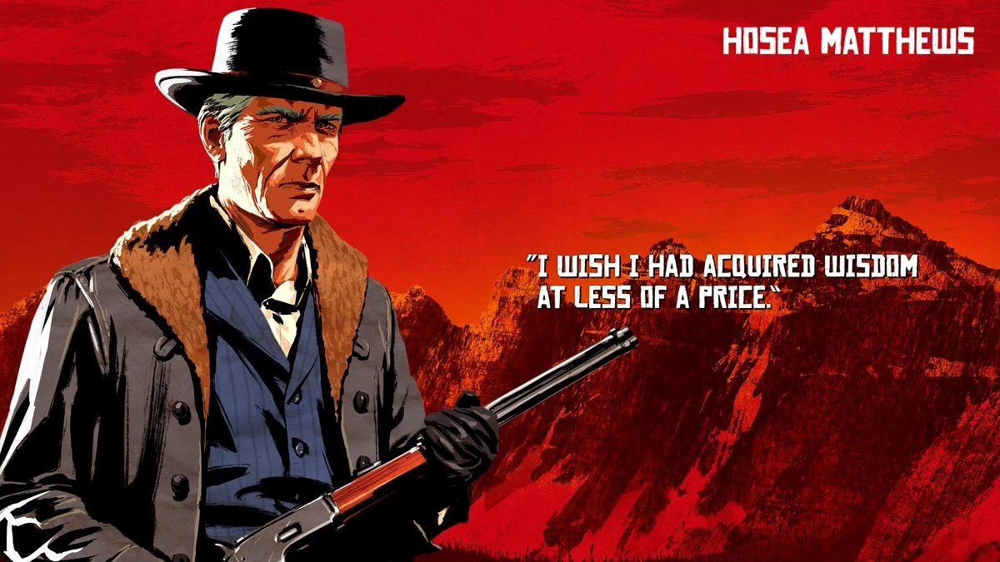
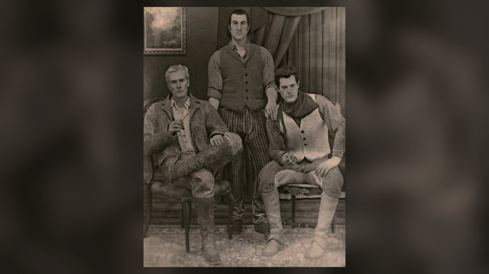
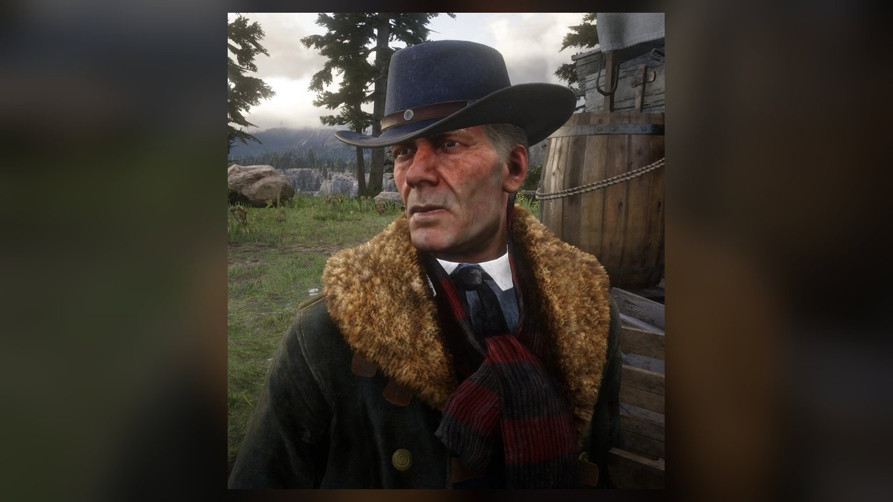
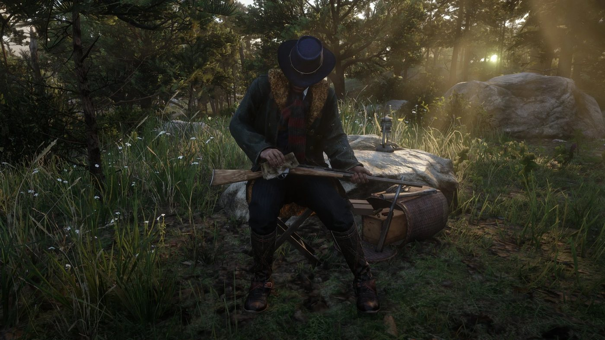
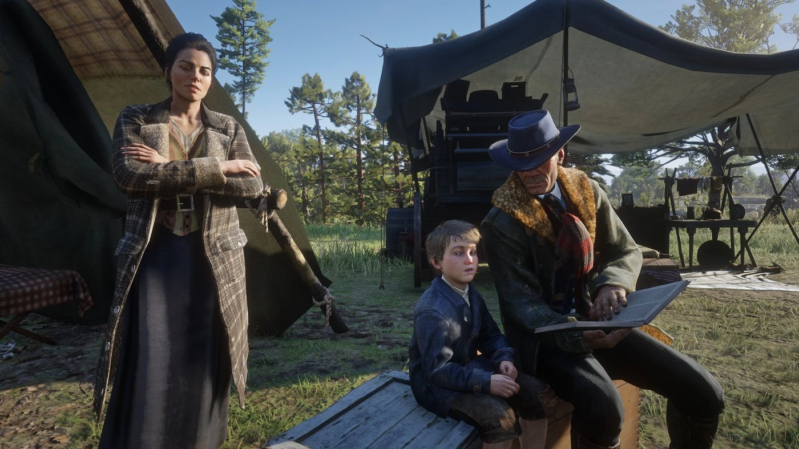

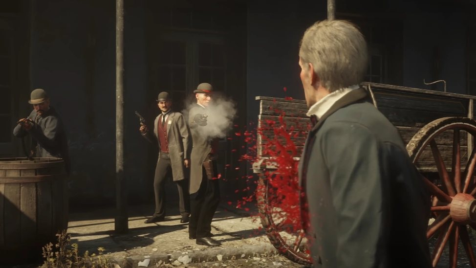
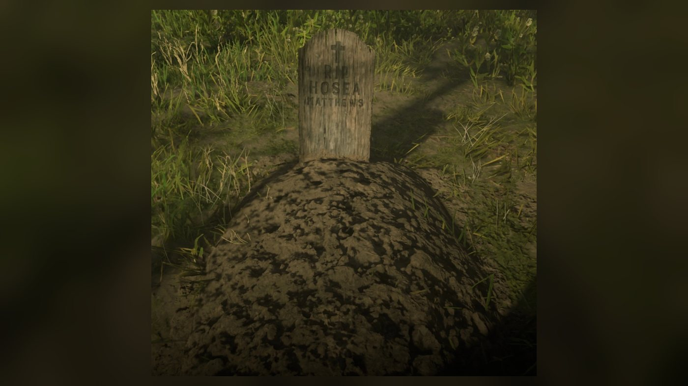
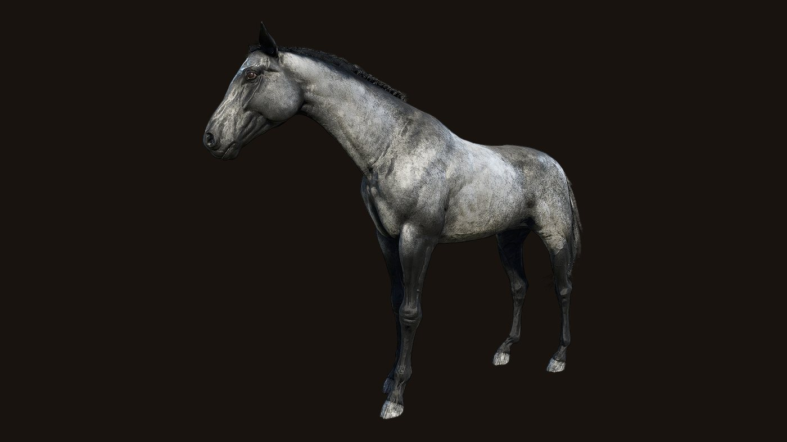